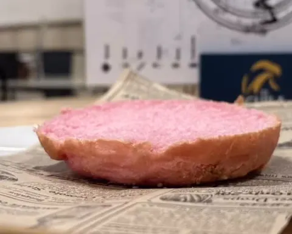
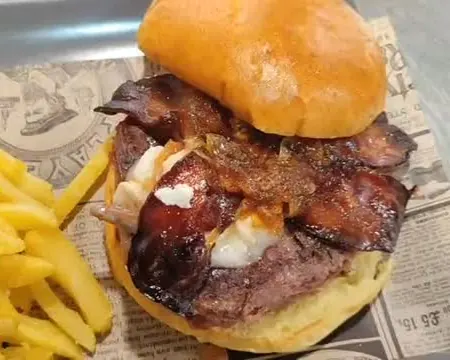
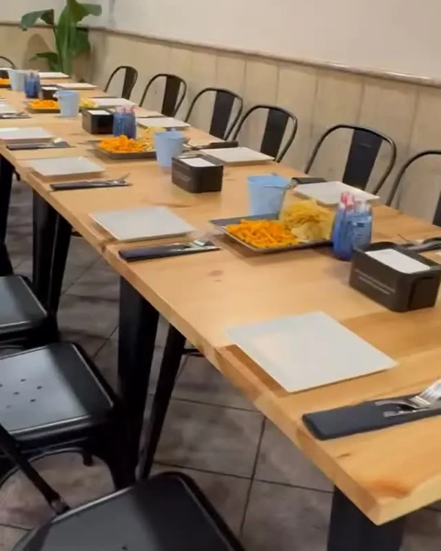
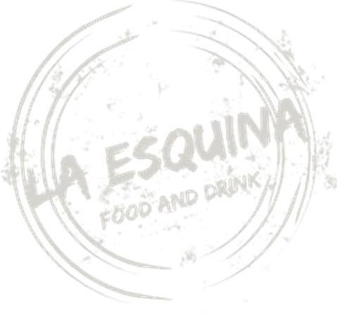
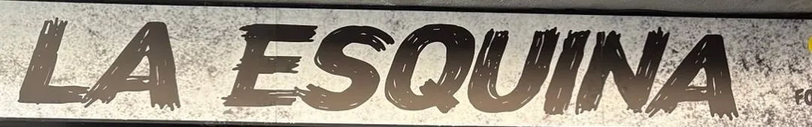

La última que hemos anunciado
La Brava
Carne de angus madurada, tomate asado, bacon y nuestra salsa brava de la casa.
Publicada en nuestro Instagram

Food and drink · C. Carmen, 22 · Cazorla
Hamburguesas, raciones y patatas caseras. Y cada mes, una burger nueva.
Pedidos por llamada de WhatsApp.
Horario · de martes a domingo
Ver el horario (según Google)Cada mes sacamos una nueva. Arriba, la última que hemos anunciado; debajo, las de antes.
La última que hemos anunciado: La Brava
Las anunciamos en Instagram: @la_esquina684
La última que hemos anunciado
Carne de angus madurada, tomate asado, bacon y nuestra salsa brava de la casa.
Publicada en nuestro Instagram
De antes
Carrillada al PX, queso de cabra y doble cheddar.
Publicada en nuestro Instagram
De antes
Smash de ternera, cheddar, carbonara y crujiente de queso.
Publicada en nuestro Instagram
De antes
Cachopo de rabo de toro, canónigos, cebolla encurtida y salsa de Pedro Ximénez.
Publicada en nuestro Instagram

De antes
180 g de carne de angus, cebolla caramelizada, queso de cabra y mermelada.
Publicada en nuestro Instagram

De antes
Sweet bacon, salsa BBQ, cebolla caramelizada, queso de cabra y carne de vaca Texas.
Publicada en nuestro Instagram
Desliza la tarjeta a un lado para ver la siguiente.
Precios: aún no tenemos la carta con precios en la web; pregúntanos.
En Google, lo que más se nombra es el tapeo y las patatas.
Pregúntanos por la carta: llámanos por WhatsApp.
Las hay de ternera, de angus y smash.
The Big Crunch BBQ
Un clásico de la casa.
La Picantona
Carne de ternera, queso cheddar, pico de gallo, jalapeños y nuestra salsa.
Crispy Chicken
Lechuga, tomate, cebolla, aguacate y salsa de yogur.
Triple Cheese Burger
Smoke Jack's
Sloppy Joe
Patatas 100 % caseras
Supremas 2.0
Una variante de nuestras patatas.
Torrezno de Soria
Una insignia de nuestro local.
Alitas BBQ
Nuestras alitas, en versión BBQ.
Pulled pork
Cerdo desmechado con nuestra salsa BBQ casera.
Carrillada al Pedro Ximénez
Sándwich jefe
Tortilla española
Platos publicados por La Esquina en su Instagram (hasta octubre de 2026). Pregúntanos por los precios.
¿Alguna alergia? Pregúntanos antes de pedir.

«Te creamos tu menú personalizado.»
Cumpleaños, comidas de grupo o cualquier evento: cuéntanos qué quieres celebrar, el día y cuántos sois, y nos adaptamos a lo que nos propongas.
Llamar por WhatsApp
Horario · de martes a domingo
Horario de Google Maps. En festivos puede cambiar: pregúntanos por llamada de WhatsApp.

C. Carmen, 22
23470 Cazorla (Jaén)
El mapa es de Google Maps: solo se carga si lo pides, y entonces Google puede guardar sus propias cookies.
¿No está aquí lo que buscas? Llámanos por WhatsApp.
Por llamada de WhatsApp al 631 97 95 71, como decimos en nuestro Instagram.
Sí, según Google. Llámanos por WhatsApp y nos dices qué quieres.
Sí: en Google aparece como adecuado para niños y para grupos.
Sí, con tarjeta y con el móvil, según Google.
Pregúntanos antes de pedir.
Llámanos por WhatsApp: en festivos el horario puede cambiar.
C. Carmen, 22 · Cazorla
Martes a domingo · horario de Google Maps